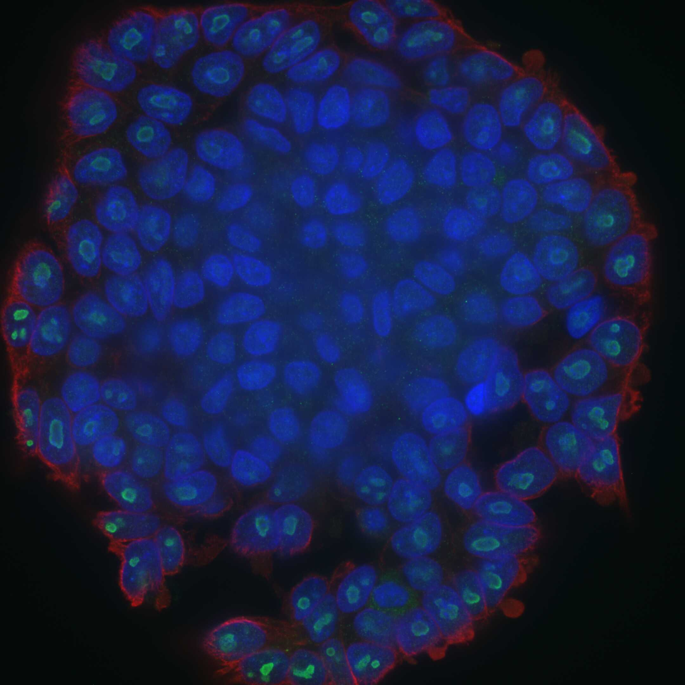
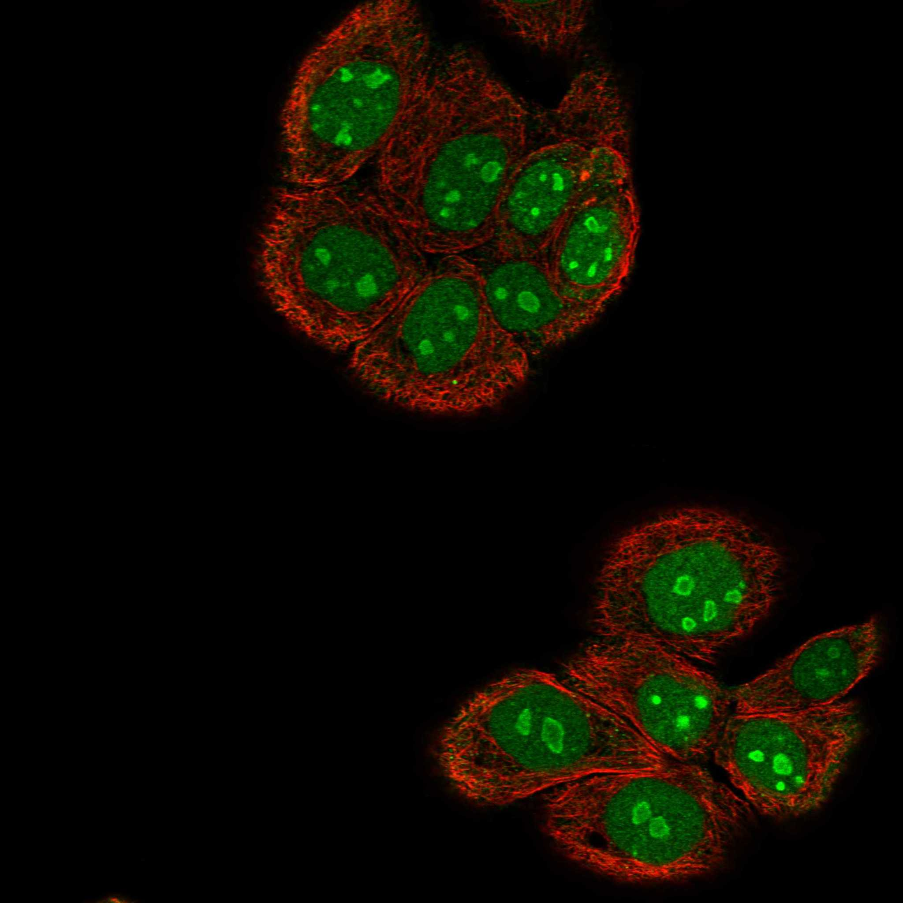

type: protein-evaluation gene: "PHF2" date: 2026-06-01 tags: [protein-scout, nucleolus, evaluation] status: scored ---
PHF2 核蛋白评估报告
1. 基本信息
| 项目 | 内容 |
|---|---|
| 基因名 / 别名 | PHF2 / CENP-35, KIAA0662 |
| 蛋白全名 | Lysine-specific demethylase PHF2 |
| 蛋白大小 | 1096 aa / 120.8 kDa |
| UniProt ID | O75151 |
2. 评分总览
| 维度 | 得分 | 新权重 | 加权后 | 关键证据摘要 |
|---|---|---|---|---|
| 核定位特异性 | 8/10 | ×4 | 32.0 | UniProt Nucleus nucleolus+Chromosome centromere kinetochore (ECO:0000269)；GO-CC nucleolus IDA, nucleoplasm IDA, kinetochore IDA；HPA Supported, Nucleoli rim+Nucleoplasm, IF 原图可获取 |
| 蛋白大小 | 3/10 | ×1 | 3.0 | 1096 aa, 120.8 kDa，大型组蛋白去甲基化酶 |
| 研究新颖性 | 4/10 | ×5 | 20.0 | PubMed strict=66, broad=98 |
| 三维结构 | 6/10 | ×3 | 18.0 | AlphaFold pLDDT 61.4 (pct>90: 32.6%)；PDB 9 个结构 (X-ray, 部分片段) |
| 调控结构域 | 8/10 | ×2 | 16.0 | PHD finger (IPR019786) + JmjC domain (IPR003347)；组蛋白 H3K9me2 去甲基化酶 + 转录共激活因子 |
| PPI 网络 | 4/10 | ×3 | 12.0 | STRING 不可用 (502)；IntAct 部分互作；UniProt 2 条 (H2BC21, NR1H4) |
| 加权总分 | 101/180** | |||
| 互证加分 | +0.0 | |||
| 归一化总分 (÷1.83) | 55.2/100** |
3. 详细分析
3.1 核定位证据
| 来源 | 定位 | 可信度 |
|---|---|---|
| UniProt | Nucleus, nucleolus (ECO:0000269)；Chromosome, centromere, kinetochore (ECO:0000269) | 高 (实验证据) |
| GO-CC | nucleolus (IDA:UniProtKB), nucleoplasm (IDA:HPA), kinetochore (IDA:UniProtKB), nucleus (TAS:ProtInc) | 高 |
| Protein Atlas (IF) | HPA Supported, Nucleoli rim (main) + Nucleoplasm (additional), IF 原图可获取 | 中高 |
HPA IF 状态: IF 图像已获取。HPA 报道 Supported 可信度，Nucleoli rim (main) + Nucleoplasm (additional)。核仁 rim 定位提示其可能参与 rDNA 转录调控。

结论: PHF2 具有充分的核定位证据（UniProt 实验注释 + GO-CC IDA + HPA IF）。独特的 Nucleoli rim 定位模式与已知的 rDNA promoter 调控功能一致。
3.2 结构与数据源
| 指标 | 数值 |
|---|---|
| AlphaFold | AF-O75151-F1 |
| 平均 pLDDT | 61.4 |
| pLDDT >90 | 32.6% |
| pLDDT 70-90 | 7.9% |
| pLDDT <50 | 54.1% |
| PDB | 9 个 (3KQI, 3PTR, 3PU3, 3PU8, 3PUA, 3PUS, 7M10, 8F8Y, 8F8Z)，覆盖 PHD+JmjC 催化域 (aa 1-451) |
| InterPro | IPR041070, IPR050690, IPR003347 (JmjC), IPR019786 (PHD zinc finger), IPR011011, IPR001965, IPR019787, IPR013083 |
| Pfam | PF17811, PF02373 (JmjC), PF00628 (PHD) |
AlphaFold PAE 状态: PAE 已下载。pLDDT 偏低 (61.4)，超过半数残基 (54.1%) pLDDT <50，反映该大蛋白存在大量无序区域。N-terminal PHD+JmjC 催化域结构确定性较高（PDB X-ray 覆盖此区域）。
3.3 研究现状
| 指标 | 数值 |
|---|---|
| PubMed strict (Title/Abstract) | 66 |
| PubMed broad | 98 |
| 别名 | CENP-35, KIAA0662（未用于 scoring） |
关键文献：PHF2 是组蛋白 H3K9me2 去甲基化酶，需要 PKA 磷酸化激活后与 ARID5B 形成复合体发挥作用 (PMID:21532585)。参与 rDNA 转录调控（被 H3K4me3 招募至 rDNA promoter）、肝代谢 (PMID:37828054)、神经干细胞基因组拓扑 (PMID:38808662)。研究热度中高（strict=66）。
3.4 PPI 网络（三源综合）
| Partner | Source | Score/Evidence | Relevance |
|---|---|---|---|
| H2BC21 | UniProt+IntAct | 2 exp, cross-linking (PMID:30021884) | Histone substrate |
| NR1H4 | UniProt | 2 exp | Nuclear receptor |
| CPNE3 | IntAct | cross-linking (PMID:30021884) | Calcium sensor |
| ESR1 | IntAct | TAP (PMID:31527615) | Nuclear receptor |
| AGGF1 | IntAct | BioID (PMID:39251607) | Angiogenic factor |
| NPM1 | IntAct | BioID (PMID:39251607) | Nucleolar proximity |
| DDX52 | IntAct | BioID (PMID:39251607) | Ribosome biogenesis |
| EIF3G | IntAct | BioID (PMID:39251607) | Translation initiation |
STRING 不可用 (502)。IntAct 互作以 BioID/CXL/Co-IP 为主，包含 NPM1 (BioID, nucleolar proximity) 和 DDX52/EIF3G 等核仁相关因子。UniProt 仅 2 条实验互作记录。PPI 网络中等。
4. 总体评价
PHF2 是组蛋白去甲基化酶，具有明确的 H3K9me2 催化活性 + rDNA 转录调控功能，与 nucleoli rim 的独特定位一致。优势在于调控结构域突出（PHD+JmjC），且有 9 个 PDB 实验结构覆盖催化域。主要不足：分子量大 (120.8 kDa)，AlphaFold 预测置信度低 (pLDDT 61.4)，文献量中等 (strict=66)，PPI 数据偏弱。
5. 数据来源
- UniProt: https://www.uniprot.org/uniprotkb/O75151
- AlphaFold: https://alphafold.ebi.ac.uk/entry/O75151
- PubMed: https://pubmed.ncbi.nlm.nih.gov/?term=PHF2
- Protein Atlas: https://www.proteinatlas.org/ENSG00000197724-PHF2
HPA IF 状态: HPA IF 图像已本地嵌入。

PAE 图像说明: AlphaFold PAE 图像已重新获取并嵌入（见下方 PAE 图像修正块）；结构判断仍结合 pLDDT 与 PAE 综合判断。
<!-- AF_PAE_REPAIR_START --> PAE 图像修正（2026-06-05）: AlphaFold 提供 predicted aligned error 图像；此前“PAE 图像暂无数据”的表述为未获取/未嵌入导致。